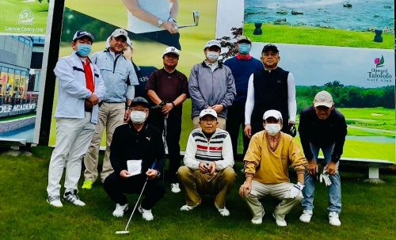
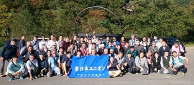
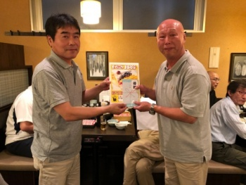
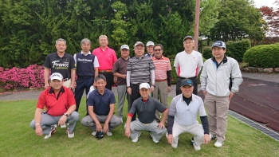

レク・サークル活動
いろいろなレクリエーション・サークル活動を行なっています
トピックス
東京地本ゴルフ大会を開催しました。NEW

2020年10月23日、地本は宇都宮レイクランドカントリークラブにおいて、感染予防に配慮しつつ「東京地本ゴルフ大会」を開催しました。
天候には、恵まれませんでしたが、ボールをスカッとかっ飛ばし、仲間たちと緑に囲まれ楽しく一日を過ごすことができました。
集まること＝ダメではありません。十分な構えと備えを行い、仲間たちと有意義な時間を共有したい思います。参加された皆さん、お疲れさまでした。
仙台地本主催「第5回団結芋煮会」が開催されました。

2019年10月10日、爽やかな秋晴れのもと仙台地本地本主催「第5回団結芋煮会」が開催されました。東京地本からも参加し、美味しい料理とお酒に舌鼓を打ち、交流を深めてきました。
「地本ボウリング大会」を開催しました。
2019年6月22日、地本は池袋ハイパーレーンにおいて、恒例の地本ボウリング大会を開催しました。

優勝は、同スコアでのジャンケンにも勝利した中野駅の播磨屋さんが、見事栄冠に輝きました。播磨屋さんおめでとうございます。参加された皆さんおつかれさまでした。
「地本ゴルフ大会」を開催しました。
2019年6月12日、東京地本は宇都宮レイクランドカントリークラブにおいて、地本ゴルフ大会を開催しました。梅雨ゾラを吹き飛ばし、好プレー・珍プレーで楽しい１日をすごしました。

優勝は、日頃の努力を発揮し運も味方につけた、中野電車区の難波剛さんでした。難波さん、おめでとうございます。参加された皆さんおつかれさまでした。
本部主催「ウォーキングレクリエーション」が開催されました。
2019年5月22日、本部主催のウォーキングレクリエーションが行わました。夏を思わせる強い日差しの下、日の出桟橋から浅草まで水上バスに揺られたあと、浅草寺で祈願し、ゴールの日暮里まで思いおもいに歩きました。
参加された皆さんお疲れ様でした。
これまでの活動
- 2020.10.23
- 宇都宮レイクランドカントリークラブにおいて「地本ゴルフ大会」を開催しました。
- 2019.10.10
- 仙台地本主催「第5回団結芋煮会」が開催されました。
- 2019.06.22
- 池袋ハイパーレーンにおいて「地本ボウリング大会」を開催しました。
- 2019.06.12
- 宇都宮レイクランドカントリークラブにおいて「地本ゴルフ大会」を開催しました。
- 2018.10.24
- 群馬県サンコー72カントリークラブにおいて、本部「第5回ゴルフ大会」が開催されました。
- 2018.06.13
- 宇都宮カンツリークラブにて、東京地本・大宮地本合同ゴルフ大会が開催されました。
- 2018.05.26
- 東京地本ボウリング大会を開催しました。
- 2018.05.10
- 結成５周年記念・ウォーキングレクリエーションが開催されました。
- 2017.10.26
- 本部主催「第4回ゴルフ大会」が開催されました。
- 2017.06.06
- 東京地本・大宮地本合同ゴルフ大会開催。
- 2017.05.27
- 東京地本ボウリング大会開催。
- 2017.05.12
- 第3回本部ソフトボール大会開催。
- 2016.10.20
- 本部主催「第3回ゴルフ大会」が開催されました。
- 2016.10.05
- 仙台地本主催「第2回団結芋煮交流会」開催。
- 2016.06.10
- 東京地本・大宮地本合同ゴルフ大会終了。
- 2016.06.04
- 関東ブロック「潮干狩り」大盛況に終了。
- 2016.05.28
- 地本ボウリング大会成功裏に終了。
- 2016.05.13
- 第2回本部ソフトボール大会開催。